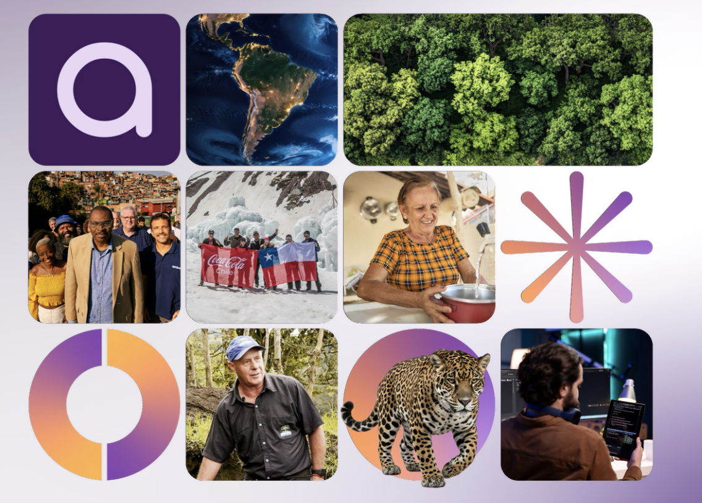

Estudio exclusivo | Impacto Corporativo en América Latina

Convierte el impacto en una ventaja competitiva para tu negocio
El primer estudio que conecta el impacto social y ambiental con resultados empresariales. Accede a marcos, evidencia y casos reales para integrar el impacto en el core de tu estrategia.
Desarrollado con el respaldo de líderes del ecosistema de impacto y corporativos en América Latina


De la intención a la ejecución estratégica
1. Entiende qué es impacto corporativo
Define una visión clara que trascienda la filantropía tradicional, alineando los objetivos sociales con el modelo de negocio core.
2. Integra el impacto en tu operación
Aprende a movilizar recursos, capital y gobernanza para que la sostenibilidad sea un motor de eficiencia y no un costo adicional.
3. Mide y demuestra valor real
Implementa métricas de impacto que hablen el lenguaje financiero y estratégico, permitiendo una toma de decisiones basada en datos.

Lo que las empresas líderes ya están haciendo (y tú aún no)
El panorama corporativo en América Latina ha cambiado. El impacto ya no es opcional, es el diferencial que separa a las empresas resilientes de las obsoletas.
-
check_circle
Gobernanza de Impacto Comités de impacto a nivel de junta directiva que validan la estrategia trimestralmente.
-
check_circle
Cadena de Valor Regenerativa Inversión directa en el desarrollo de proveedores locales con enfoque de sostenibilidad.
-
check_circle
Capital Catalítico Interno Asignación de presupuestos específicos para innovación con propósito fuera de los silos de RSE.
*Datos proyectados según el informe Latimpacto 2024
El impacto ya es un factor de negocio
De los consumidores en AL prefieren marcas con propósito demostrado.
Del valor reputacional de una empresa depende hoy de sus compromisos ESG.
De las empresas líderes en la región han aumentado su presupuesto de impacto en 2 años.
Una nueva forma de entender el rol de la empresa
"El impacto corporativo ya no puede ser un reporte anual de buenas intenciones. El estudio de Latimpacto proporciona la hoja de ruta que necesitábamos para que la sostenibilidad sea el motor de nuestra competitividad futura."

Director/a de Sostenibilidad
Corporación Multilatina Líder
Preguntas frecuentes
¿A quién va dirigido este estudio? expand_more
A directivos, gerentes de sostenibilidad, líderes de inversión social y tomadores de decisiones que buscan elevar el impacto al nivel estratégico de la organización.
¿Tiene algún costo descargar el material? expand_more
El acceso inicial al estudio y al resumen ejecutivo es gratuito para los miembros y aliados estratégicos de la red Latimpacto a través de este portal.
¿Qué países abarca el análisis? expand_more
El estudio contempla datos y casos de éxito de las principales economías de América Latina, incluyendo México, Colombia, Brasil, Chile y Argentina.
¿Puedo compartir el estudio con mi equipo? expand_more
Sí, el objetivo de Latimpacto es democratizar el conocimiento sobre inversión por impacto. Te invitamos a difundirlo internamente en tu organización.
Es momento de convertir el impacto en una decisión estratégica
Únete a la vanguardia corporativa de América Latina y redefine el éxito de tu compañía.